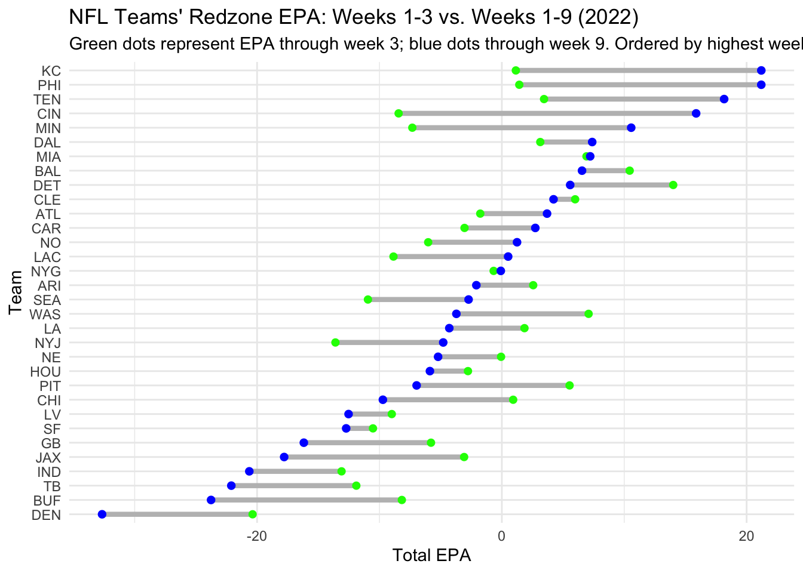

Redzone Efficiency in the NFL: Which Teams Are Improving or Declining?
Author
Tahlia Williams
Published
November 1, 2025
Replicating ESPN’s Redzone Success Analysis in the NFL
Redzone performance often determines how successful an NFL offense can be. Teams that convert redzone appearances into touchdowns maximize scoring opportunities , while those that stall leave points on the field. Inspired by an ESPN analysis of redzone success, this code will use expected points added (EPA) to measure how effectively teams perform inside the 20 yard line.
We’ll focus on the 2022 NFL season, comparing each team’s redzone EPA through the first three weeks and through the first nine weeks to see which offenses improved, and which regressed as the season progressed.
Code
library(tidyverse)
── Attaching core tidyverse packages ──────────────────────── tidyverse 2.0.0 ──
✔ dplyr 1.1.4 ✔ readr 2.1.5
✔ forcats 1.0.0 ✔ stringr 1.5.2
✔ ggplot2 3.5.2 ✔ tibble 3.3.0
✔ lubridate 1.9.4 ✔ tidyr 1.3.1
✔ purrr 1.1.0
── Conflicts ────────────────────────────────────────── tidyverse_conflicts() ──
✖ dplyr::filter() masks stats::filter()
✖ dplyr::lag() masks stats::lag()
ℹ Use the conflicted package (<http://conflicted.r-lib.org/>) to force all conflicts to become errors
# A tibble: 1 × 2
plays total_epa
<int> <dbl>
1 207 7.68
Miami had about 207 redzone plays in 2022 with a total EPA of around 7.68. Compared to 20 in weeks 3 and 9, their ERA per play was strong but dipped later showing inconsistency
Below we are creating data frames for all NFL teams in 2022. One for the first 3 weeks, one for the first 9 weeks, with columns for number of plays and total EPA.
We’re going to now join both datasets to compare each team’s early and midseason redzone performance
Code
teams_combined <- teams_week3 |>left_join(teams_week9, by ="posteam")teams_combined <- teams_combined %>% dplyr::arrange(desc(epa_week9))
A dumbbell chart makes it easy to visualize how each team’s total EPA inside the redzone changed from week 3 to week 9.
Code
library(ggalt)
Registered S3 methods overwritten by 'ggalt':
method from
grid.draw.absoluteGrob ggplot2
grobHeight.absoluteGrob ggplot2
grobWidth.absoluteGrob ggplot2
grobX.absoluteGrob ggplot2
grobY.absoluteGrob ggplot2
Code
teams_combined %>%ggplot() +geom_dumbbell(aes(x = epa_week3, xend = epa_week9, y =reorder(posteam, epa_week9)),colour ="grey",size =1.5,colour_x ="green",colour_xend ="blue" ) +labs(title ="NFL Teams' Redzone EPA: Weeks 1-3 vs. Weeks 1-9 (2022)",subtitle ="Green dots represent EPA through week 3; blue dots through week 9. Ordered by highest week 9 EPA.",x ="Total EPA",y ="Team" ) +theme_minimal()
Warning: Using the `size` aesthetic with geom_segment was deprecated in ggplot2 3.4.0.
ℹ Please use the `linewidth` aesthetic instead.

Findings and Takeaways
This chart compares each NFL team’s redzone EPA added through the first three weeks of the 2022 season (green) to their total EPA through nine weeks (blue). Teams toward the top, such as Kansas City, Philadelphia, and Tennessee, maintained high redzone efficiency throughout the first hald of the season. Their consistent ability to convert scoring opportunities into points helped drive their overall offensive success.
On the other hand, teams like Denver, Buffano, and Tampa Bay had their redzone production stalled, ranking among the lowest in total EPA by week 9. Denver, started poorly and showed no improvement, infact their had declined, reflecting their offensive struggles this year.
A few teams like Baltimore and Cincinnati improved signifigantly between weeks 3 and 9, suggesting that adjustments to play calling or execution began to pay off midseason.
Overall, this analysis shows how early redzone performance can signal offensive rhythm, but it also highlights the teams can build or lose efficiency as defenses adapt and improve over time.